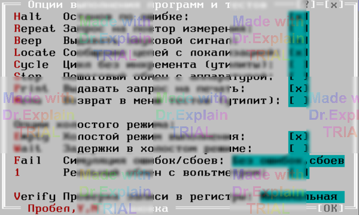

5.1 Меню Options/Execute «Выполнение программ и тестов»
Команда Options/Execute открывает меню (см. рисунок 1), определяющее поведение ПОАСК при выполнении программ контроля (ПК) и тестов (утилит).

5.1.1 «Останов по ошибке»
- При выполнении ПК — останов производится по завершению команды, обнаружившей ошибку(и) в ОК. Нарушения режимов контроля останавливают выполнение независимо от состояния опции.
- При выполнении теста — останов после этапа, на котором обнаружен сбой.
Устанавливайте опцию, если хотите анализировать ошибки «на месте». Сбрасывайте, когда важно увидеть все ошибки после завершения ПК (например, для тестовых ПК с заранее заданными ошибками). В тестах опция обычно установлена; её сбрасывают при наладке/регулировке, чтобы зациклить проблемный участок.
5.1.2 «Запрос на повтор измерения»
Разрешает по запросу повторить измерение при обнаружении ошибки/сбоя. При этом:
- Аппаратура остаётся в состоянии на момент обнаружения ошибки/сбоя.
-
В нижней строке протокола выводится сообщение о характере ошибки,
например:
“?-Нет сообщения Rизм(точка1,точка2)>Rуставки”. - Появляется меню (см. рисунок 2):
5.1.3 «Выдавать звуковой сигнал»
Звуковой сигнал выдаётся при остановах ПК/теста (обнаружение ошибок, сбоев) и при завершении ПК.
5.1.4 «Сообщение цепей с локализацией»
Определяет алгоритм локализации ошибок проверки цепей на сообщение в командах ПЭ и ПР. В командах ЭТ и РТ, а также в ПР при указании нижней границы диапазона контроля сопротивления, опция считается установленной всегда.
- Опция установлена — используется «длинный» алгоритм, определяющий фрагменты цепи, между которыми обрывы. Точность выше, но время проверки сильно увеличивается (например, обрыв первой точки увеличит время примерно втрое).
- Опция сброшена — применяется «быстрый» алгоритм: проверяется сообщение между первой точкой цепи и каждой последующей. При обрыве «оборванная» точка подключается к первой.
5.1.5 «Цикл без инкремента (утилиты)»
Используется в тестах: отменяет последовательное наращивание адресов точек, номеров разбиений и т. д. Применяется для зацикливания проблемного участка при отладке.
5.1.6 «Пошаговый обмен с аппаратурой»
Для отладки. Делает останов в начале каждого цикла обмена (при условии, что соответствующие сообщения разрешены к сохранению/показу). Остановка возможна на уровнях:
- «Алгоритм» — префикс
$ALG - «Участок теста» — префикс
$TST - «Обмен с устройствами» — префикс
$DEV - «Обмен с регистрами» — префикс
$REG
При останове в протокол выводится строка с наименованием текущего цикла, а внизу экрана — меню (см. рисунок 5.3):
- To — Вглубь: шаг с остановами во вложенных функциях (используется для детального прохода, например, по обмену с аппаратурой).
- Skip — Поверх: выполнить текущую функцию без остановов во вложенных (для ускорения).
- Esc — Подряд: сбросить опцию «Пошаговое выполнение» и продолжить без остановов.
-
Options — Опции: вызов меню Options (п. 5).
Заметим:- Изменение конфигурации аппаратуры вступит в силу только после завершения текущей ПК/теста.
- В ходе выполнения смена опций вида «Сохранять» (меню «Протокол выполнения», п. 5.2) неэффективна: используются значения, запомненные при старте. Новые значения вступят в силу со следующего сеанса выполнения.
- Info — Инфо: вызов меню Info (п. 6).
5.1.7 «Выдавать запрос на печать»
Только для ПК: по завершению выполнения запрашивает печать протокола.
5.1.8 «Возврат в меню тестов (утилит)»
При последовательном запуске тестов/утилит из меню Test-Тесты после завершения возвращает в головное меню.
5.1.9 «Холостой режим выполнения»
Включает холостой режим для ПК/тестов. Применяется при отладке ПОАСК или в демонстрационных целях.
5.1.10 «Задержки в холостом режиме»
Требует реально выполнять программные задержки в холостом режиме. Используется только при отладке.
5.1.11 «Симуляция ошибок/сбоев»
Работает только в холостом режиме и задаёт сценарий генерации ошибок/сбоев.
- Без ошибок, сбоев — ошибки не генерируются. Секция ЦЕПИ ПК (если есть, [3, п. 6]) анализируется только в этом режиме.
-
Установки для измерений (вольтметр, АЦП, ПКИ, ППУ):
< нормы, Ошибка— результат ниже нижней границы, сообщение с префиксом?ERR(ПК) или?TST(тест); генерируется значение нижняя граница / 2.> нормы, Ошибка— результат выше верхней границы, сообщение?ERR/?TST; генерируется верхняя граница × 2 (или переполнение).< нормы, Сбой— аналогично «< нормы, Ошибка», но для самоконтроля АСК (префикс?MODили?FAT).> нормы, Сбой— аналогично «> нормы, Ошибка», но для самоконтроля (префикс?MODили?FAT).
-
Установки для проверки режимов стабилизации ПИНТа и платы ПИТ:
Стаб = I, Ошибка— ожидалась «Стабилизация U»; сообщение?ERR/?TST.Стаб = U, Ошибка— ожидалась «Стабилизация I»; сообщение?ERR/?TST.Стаб = I, Сбой— как «Стаб = I, Ошибка», но для самоконтроля (?MOD/?FAT).Стаб = U, Сбой— как «Стаб = U, Ошибка», но для самоконтроля (?MOD/?FAT).
В реальном режиме при сбоях выводится меню-запрос (повтор/игнорировать). В холостом режиме его не показывают для ускорения, если опция «Останов по ошибке» (п. 5.1.1) сброшена — в протокол сразу выводится сообщение как при выборе «Игнорировать».
5.1.12 «Реальный обмен с вольтметром» и «Реальный обмен с ПИНТом на COM»
Для отладки конкретного прибора в реальном режиме автономно от АСК. Остальные устройства работают в холостом режиме. Связь должна быть только последовательной (IBM-порты, без COM-разветвителя). Используется разработчиками АСК.
5.1.13 «Проверка записи в регистры»
Применяется при выполнении и ПК, и тестов:
- Минимальная — проверять запись только «попутно» при чтении того же регистра.
- После записи — читать регистр сразу после записи и сравнивать. Замедляет обмен с аппаратурой.
- Тотальная — после каждой записи проверять все доступные регистры чтением и сравнением. Сильно замедляет управление и используется только при отладке.